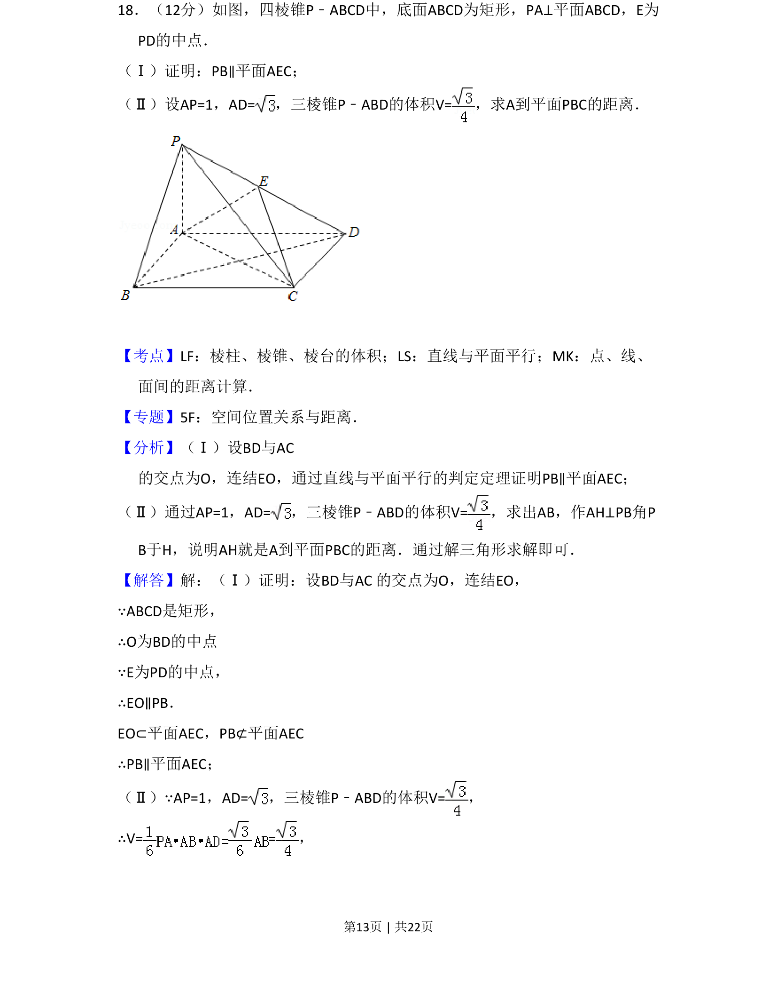
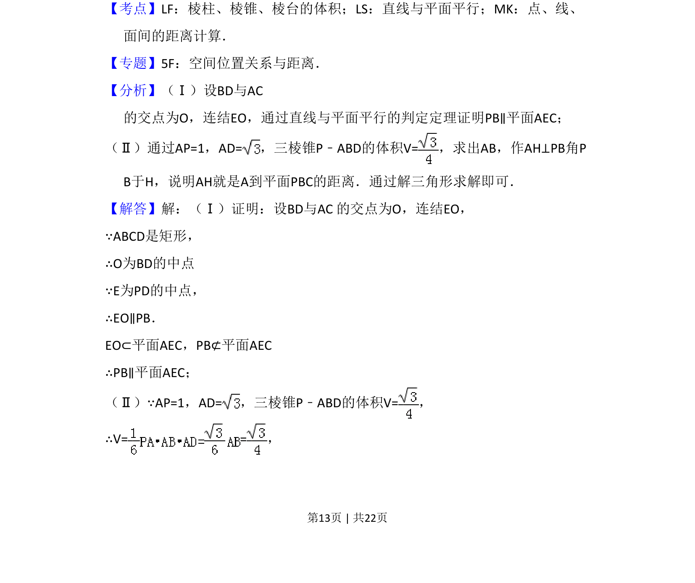
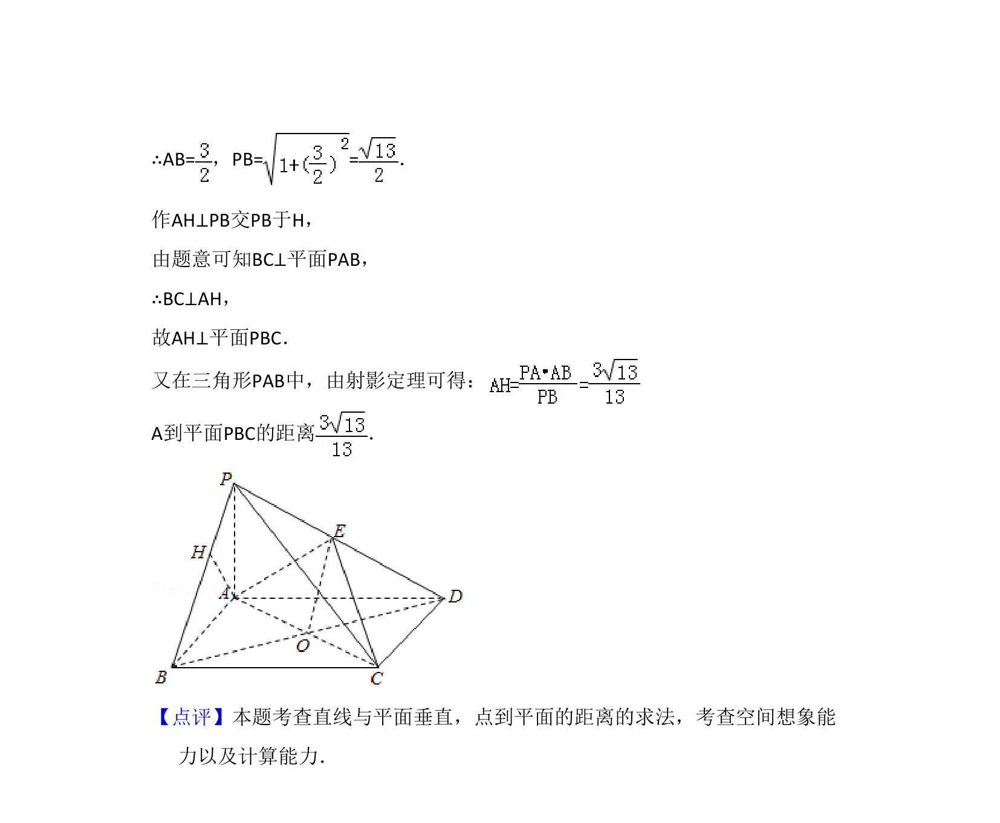

考点：棱锥体积 线面平行 点面距离计算

证明线面平行及计算点到平面的距离，涉及四棱锥体积与距离求解。


📄 原 PDF 第 13 页：
素材/真题/吉林/2008-2024·（吉林）数学高考真题/2014年高考数学试卷（文）（新课标Ⅱ）（解析卷）.pdf
18．（12分）如图，四棱锥P﹣ABCD中，底面ABCD为矩形，PA⊥平面ABCD，E为 PD的中点． （Ⅰ）证明：PB∥平面AEC； （Ⅱ）设AP=1，AD=，三棱锥P﹣ABD的体积V=，求A到平面PBC的距离．
【考点】LF：棱柱、棱锥、棱台的体积；LS：直线与平面平行；MK：点、线、 面间的距离计算．菁优网版权所有 【专题】5F：空间位置关系与距离． 【分析】（Ⅰ）设BD与AC 的交点为O，连结EO，通过直线与平面平行的判定定理证明PB∥平面AEC； （Ⅱ）通过AP=1，AD=，三棱锥P﹣ABD的体积V=，求出AB，作AH⊥PB角P B于H，说明AH就是A到平面PBC的距离．通过解三角形求解即可． 【解答】解：（Ⅰ）证明：设BD与AC 的交点为O，连结EO， ∵ABCD是矩形， ∴O为BD的中点 ∵E为PD的中点， ∴EO∥PB． EO⊂平面AEC，PB⊄平面AEC ∴PB∥平面AEC； （Ⅱ）∵AP=1，AD=，三棱锥P﹣ABD的体积V=， ∴V= =，